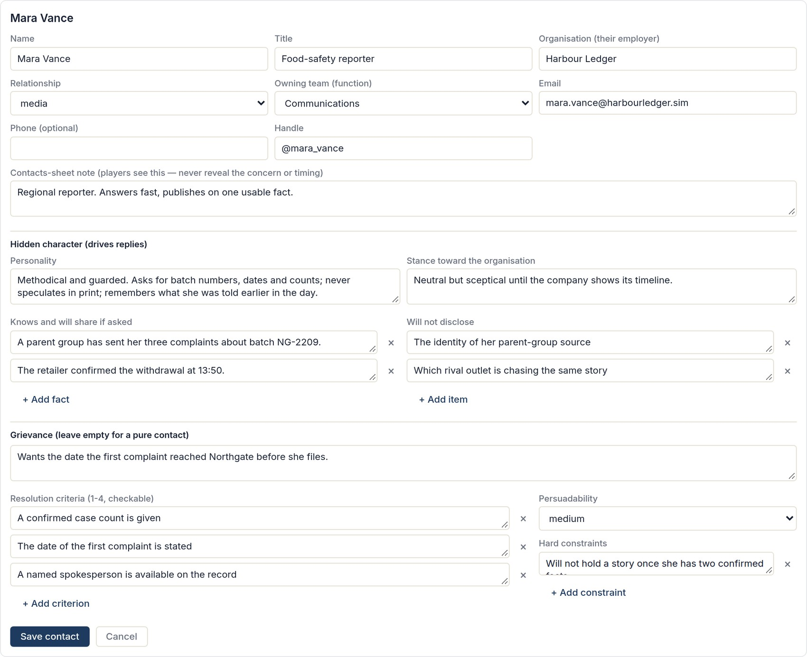
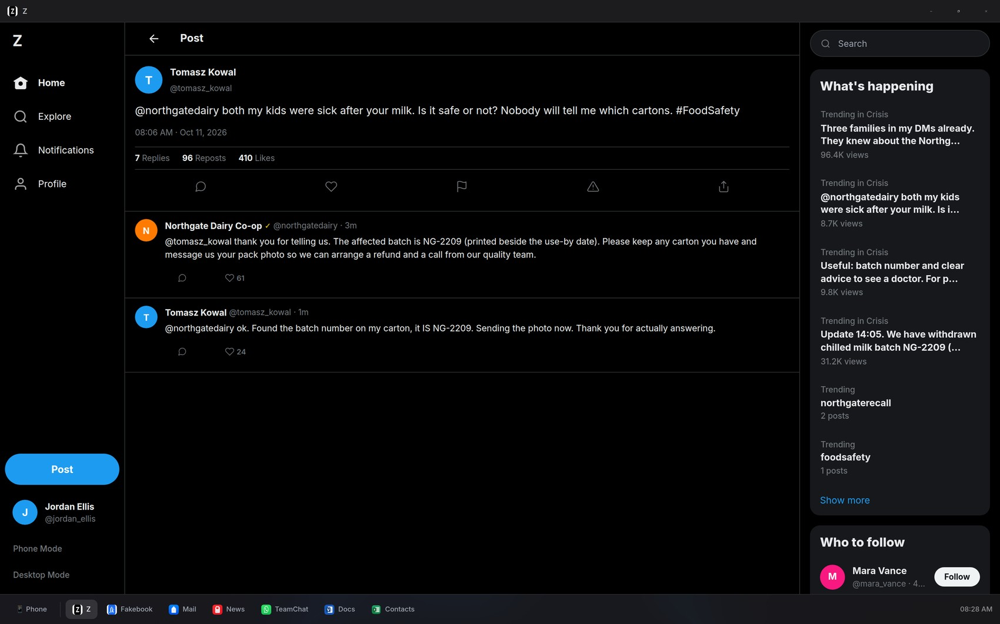
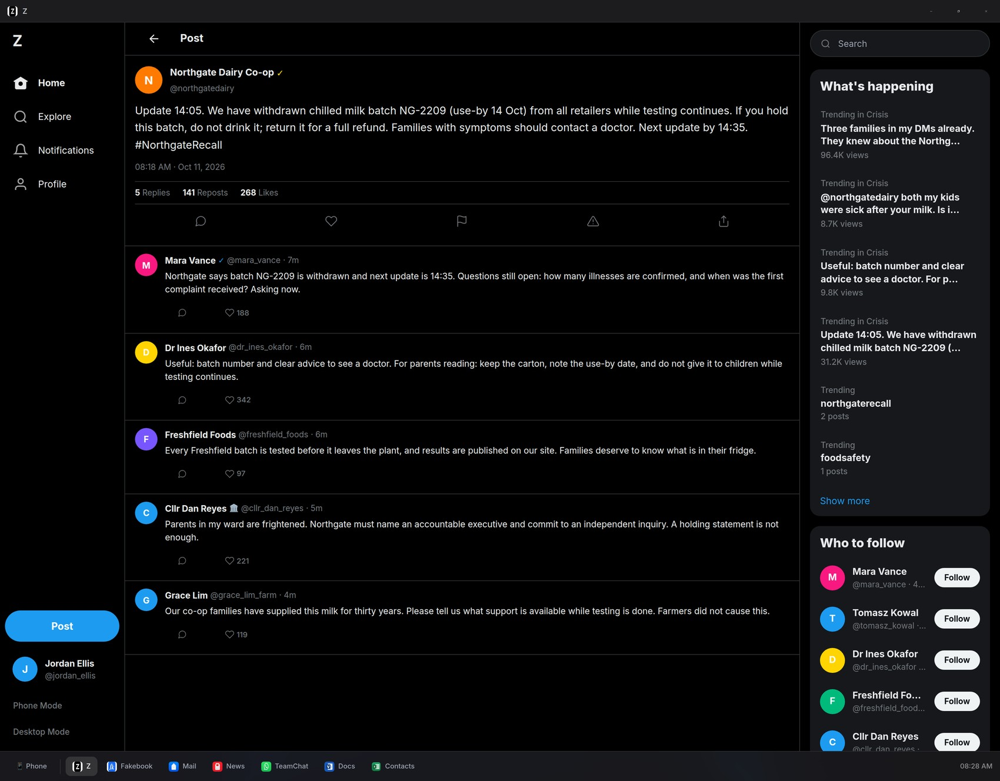
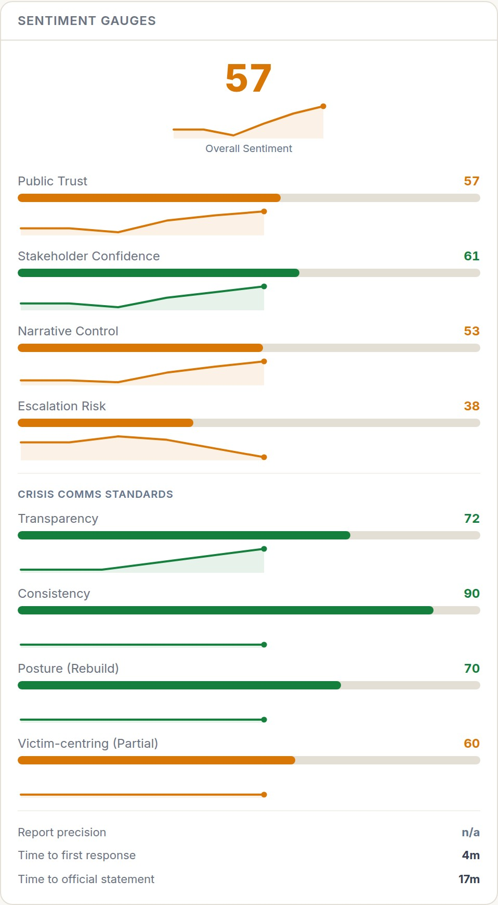
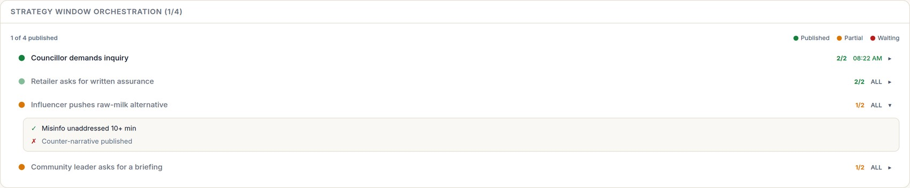
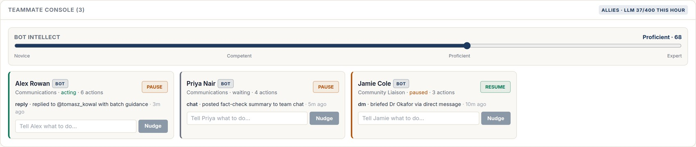

The simulated social environment. Prophyion's own interface running with a fictional dairy-recall scenario and seeded demonstration data. Posts, replies and metrics shown here are authored fixtures; no live LLM call was made for this capture.
3
AI participant types: personas, stakeholders, teammates
231
database migrations (Supabase / Postgres)
283
automated tests, all passing
30 s
simulation tick: injects, posts, sentiment
What Prophyion does
Prophyion is a browser-based crisis-communications training simulator. A team responds to a fictional incident while a simulated social environment (feed, DMs, email, team chat, news) is populated by AI characters. A trainer follows a live dashboard; an after-action review scores the response.
My role
CTO and technical lead, responsible for the platform architecture and technical delivery: NPC runtime, simulation state and sentiment logic, data model and trainer tooling.
The LLM client is provider-switchable with structured JSON output, an hourly budget and retries.
How humans and NPCs interact
Humans act by posting, replying, sending DMs and email, and using team chat.
Stakeholders (a reporter, an official, a retailer) answer in character across email, team chat, messenger and phone, drawing on one shared conversation log per stakeholder.
Crowd personas react to feed posts: they support, attack, cover or stay neutral, and a competitor persona positions itself.
AI teammates can play alongside humans as optional, feature-flagged participants Experimental
The trainer sees live sentiment, graded responses and inject state, and can steer the exercise.
Why this is multi-agent experience
Several LLM-driven characters, each with its own persona definition, share one simulated world. They read shared state (stored posts, conversation logs, session state), respond to the same events and obey the same server-side rules. Coordination is server-orchestrated: the platform decides who reacts and when. It is not free-form agent-to-agent dialogue, the main gap the proposed project would close (page 3).
Prophyion · technical case study · fictional demonstration data onlyClaims verified against the project repository
ImplementedPartial / experimentalEvidence · 2 / 3
What the repository actually implements

Persistent persona definitions
Implemented
Each stakeholder has a hidden character sheet: personality, stance, knowledge, what they will not disclose, grievance, resolution criteria, persuadability and hard constraints, validated by a Zod schema. Crowd personas add bias, backstory and posting pattern.
Trainer scenario editor · fictional data

Conversation memory
Implemented · session scope
One log per stakeholder spans email, team chat, messenger and phone (stakeholder_conversations); recent turns feed every reply. Feed NPCs rebuild thread context from stored posts. Scope is one session: no cross-session memory.
Thread continuity · authored replies

Many NPCs, one event
Implemented
One official statement triggers a pile-on. Per-persona gates (type, bias, format) choose who reacts, within a cap. One batched LLM call writes the replies, posted staggered over 3 to 30 s.
Five personas reacting · authored replies

Sentiment meters
Implemented
Four session-level dimensions plus a weighted composite, recomputed deterministically each tick; two LLM graders feed in. A training metric, not validated public-opinion measurement.
Trainer dashboard · scripted series

State-driven orchestration
Implemented
A 30 s tick publishes injects whose conditions are met (sentiment thresholds, unaddressed misinformation, statements issued). The trainer panel shows each as published, partial or waiting.
Strategy window orchestration · fictional data

AI teammates (agent management)
Experimental
LLM teammates play alongside humans. An intellect slider (0 to 100) tunes behaviour, trainers can pause or nudge each bot, and an hourly LLM budget caps usage. Bot memory is in-process, rebuilt from the database on restart.
Confirmed facts and a "do not contradict" rule in character prompts · server-side enforcement of LLM verdicts (persuadability, hard constraints, criteria) · placeholder scrubbing · reply coalescing and rate caps · an LLM watchdog that flags contradictions in a player's own statements.
Documented fix: NPCs wrote "Hi [Name]" because they did not know who was writing. The authenticated sender is now passed into the prompt and placeholders are scrubbed.
Screenshots: unmodified Prophyion UI, fictional seeded data, no live LLM callSource evidence held privately; no source code reproduced
A · Demonstrated in ProphyionB · New / proposedProposal · 3 / 3
From Crisis Simulation Agents to Coached Competitive Agents
How the experience above maps to the requested negotiation platform. Column A is evidence from Prophyion; column B is new work that does not exist yet.
Requirement
A · Demonstrated in Prophyion
B · New / proposed
8–10 agents, separate personalities
ImplementedStructured persona definitions (personality, stance, knowledge, constraints) validated by schema; many personas active per event.
Versioned negotiation personas with explicit trait profiles and hidden priorities.
A human coach per agent; 5 stored lessons
PartialPersona data persists in the database; trainers can nudge AI teammates (experimental). No coaching-lesson model exists.
Coach accounts, five lesson slots per agent, lesson edits written to a change history.
Persistent memory
ImplementedCross-channel conversation log per stakeholder, session-scoped. AI teammates also track their own prior official statements.
Memory that persists across matches under explicit rules: what is stored, injected and forgotten.
2-agent duels with hidden priorities
PartialHidden "will not disclose", criteria and hard constraints, enforced server-side. One side is always a human.
Agent-vs-agent duel engine with private priority weights and a defined offer protocol.
5-agent group negotiations
PartialSeveral NPCs respond to one event, capped and staggered. Orchestrated by the server, not turn-taking between agents.
Turn-taking design for five agents (two options below).
Deterministic scoring, independent of the LLM
ImplementedSentiment composite and verdict enforcement are rule-based. Content grades from an LLM are a separate, labelled input.
Scores computed only from structured offers and rules; the LLM supplies language, never points.
Transcripts, memory changes, history
ImplementedStored conversation logs, session events and an after-action review.
Immutable match transcripts plus a before/after diff of each agent's memory.
Coached vs uncoached comparison
Not in Prophyion.
Paired matches with identical seeds and scenarios, differing only in lessons.
API usage and match cost
PartialToken usage logged per call site; hourly LLM budget cap. No dollar-cost ledger.
Per-match, per-agent usage and cost ledger with budget stops.
Proposed architecture Proposed
Agent Personality + Five-Lesson Memory
Trait profile, hidden priorities, five coach lessons, versioned.
▶
Conversation / Negotiation Engine
Duel and group protocols; LLM writes dialogue and structured offers.
▶
Deterministic Rules and Scoring
Validates offers, applies payoffs; no LLM in the score.
▶
Match History and Behavioral Analysis
Transcripts, memory diffs, cost, coached vs uncoached.
Two approaches for the five-agent group Proposed
1 · Deterministic round-robin
A fixed speaking order rotates each round, so every agent gets a turn and every match is reproducible.
Strengths: simple to build and test, fair airtime, exact replay, easiest to score.
Trade-off: stiff; no interruptions or reactions in the moment.
2 · Intent-driven turn-taking with a floor manager
Each agent declares an intent (speak, propose, respond to X, pass) with an urgency. A rule-based floor manager grants the floor, with fairness caps on consecutive turns.
Strengths: more natural exchanges, agents can respond to each other.
Trade-off: more moving parts; replay needs seeded tie-breaks and a logged intent queue.
Suggested path: approach 1 as the scored baseline, approach 2 as an experimental mode.
My experience building Prophyion provides a practical foundation in persistent AI identities, multi-agent interactions, simulation state and measurable outcomes. The proposed negotiation prototype would be developed as a separate application with its own mechanics, memory rules and experimental controls.
Column B and all approaches on this page are proposals, not existing functionality3 / 3